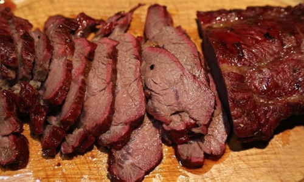

Slow-Cooked Bear Roast
Ingredients
- 3-4 lb bear roast
- 4 cloves garlic, minced
- 1 onion, sliced
- 2 cups beef broth
- 1 Tbsp Worcestershire sauce
- Salt and pepper to taste
Directions
- Season bear roast with salt and pepper. Place in a slow cooker with garlic, onion, beef
broth, and Worcestershire sauce. Cook on low for 8-10 hours.
- Serve bear roast with garlic
mashed potatoes and green beans.